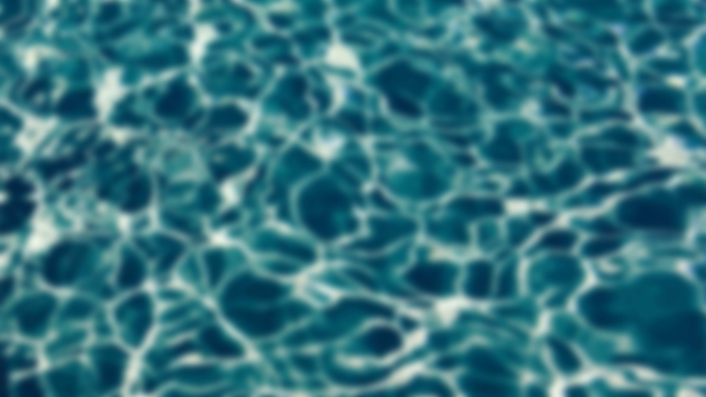

Harvest
For natice communities like the Nez Perce and Yakama tribes, salmon are a First Food, and central
to their practices, spiritual life, and treaty-protected rights. These groups of people have managed salmon
populations sustainably for generations through use of in-river selective fishing tools such as dipnets, weirs, and fish wheels.
As a keystone species of the Columbia River basin, salmon play a crucial role in the region's river ecosystem by transferring nutrients
from the ocean to inland habitats and supporting a wide range of other species. Consequently, the decline of wild salmon threatens both
ecological balance and cultural survival.